BasesFuncionales.mw
Bases para un espacio de funciones
Luis A. Núñez
Escuela de Física
Universidad Industrial de Santander
Bucaramanga Colombia
Actualizado Noviembre2020
Expansión por series de Taylor. Una base de monomios en un espacio de polinomios
Consideremos una función sencilla
| > |
f := x -> sqrt(1-x^2)*sin(3*x); |
| > |
plot(f(x),x=-1..1, legend=["f"]); |
y recordemos la aproximación por serie de Taylor. Fijemos el mayor órden del monomio en la aproximación
| > |
Taylor[n]:= taylor(f(x),x=0,n); |
Nótese que fijamos el orden de la aproximación es n-1
| > |
fAproxTaylor[n]:=convert(Taylor[n],polynom): |
La serie de Taylor no es más que una expansión en una base de monomios en la cual conocemos los coeficientes y sabemos como generarlos. Si graficamos la función y su aproximación vemos, que mejora cuando aumentamos el orden del polinomio
| > |
plot([f(x),fAproxTaylor[n]],x=-1..1, legend=["f","fAproxTaylor"]); |
| > |
nn:=9;Taylor2[nn]:= taylor(f(x),x=0,nn);fAproxTaylor2[nn]:=convert(Taylor2[nn],polynom): |
| > |
plot([f(x),fAproxTaylor[n],fAproxTaylor2[nn]],x=-1..1, legend=["f","fAproxTaylor", "fAproxTaylor2"]); |
Como siempre el error de la aproximación será la norma de la resta de los dos vectores: la función original y la función aproximada por series de Taylor. Para el producto interno < f | g > = ∫1-1 f(x) g(x) dx el error será
< f -fAprox| f -fAprox > = ∫1-1 (f -fAprox)^2 dx
Esto es para el caso de n=
| > |
ErrorTaylor := sqrt(int((f(x)-fAproxTaylor[n])^2,x=-1..1)); evalf(%); |

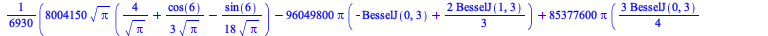
|
 |
(6) |
y para el caso de n
| > |
ErrorTaylor2 := sqrt(int((f(x)-fAproxTaylor2[nn])^2,x=-1..1)); evalf(%); |
Claramente, para este caso el error disminuye un órden de magnitud al aumetar un orden en la aproximación. En ambos casos las desviaciones ocurren en los extremos de la función
Taylor (la base de monomios) no es ortogonal
Para el producto interno < f | g > = ∫1-1 f(x) g(x) dx esta base de monomios no es ortogonal
| > |
Int(x^l*x^m,x=-1..1)=int(x^l*x^m,x=-1..1); |
Miren el caso particular para l = 14 y m = 28
| > |
Int(x^l*x^m,x=-1..1)=int(x^l*x^m,x=-1..1);
Prodintern:=int(x^l*x^m,x=-1..1);subs({l=14,m=28},Prodintern); |
Ortogonalización de la base de monomios
Supongamos que ahora ortogonalizamos esa base de monomios 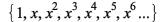 mediante del procedimiento de Gram Schmidt. Podemos construir los coeficientes a partir de la definición de producto interno < f | g > = ∫1-1 f(x) g(x) dx
Para ello almacenamos en un arreglo la base de monomios que es, en general, la base "oblicua"
| > |
KK := n-2;
for k from 0 to KK do BaseOblic[k]:= x^k end do; |
|
| 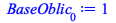 |
![Typesetting:-mprintslash([BaseOblic[1] := x], [x])](images/BasesFuncionales_27.gif) |
| 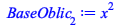 |
| 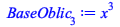 |
![Typesetting:-mprintslash([BaseOblic[4] := `*`(`^`(x, 4))], [`*`(`^`(x, 4))])](images/BasesFuncionales_30.gif) |
|
(11) |
y luego ortogonalizamos mediante el procedimiento de Gram-Schmidt para obtener
| > |
BaseOrtog[0]:= BaseOblic[0];
BaseOrtog[1] := BaseOblic[1]-(simplify(int(BaseOrtog[0]*BaseOblic[1],x=-1..1)/int(BaseOrtog[0]^2,x=-1..1) ))*BaseOrtog[0];
BaseOrtog[2] := BaseOblic[2]-(simplify(int(BaseOrtog[1]*BaseOblic[2],x=-1..1)/int(BaseOrtog[1]^2,x=-1..1) ))*BaseOrtog[1]
-(simplify(int(BaseOrtog[0]*BaseOblic[2],x=-1..1)/int(BaseOrtog[0]^2,x=-1..1) ))*BaseOrtog[0];
BaseOrtog[3] := BaseOblic[3]-(simplify(int(BaseOrtog[2]*BaseOblic[3],x=-1..1)/int(BaseOrtog[2]^2,x=-1..1) ))*BaseOrtog[2]
-(simplify(int(BaseOrtog[1]*BaseOblic[3],x=-1..1)/int(BaseOrtog[1]^2,x=-1..1) ))*BaseOrtog[1]
-(simplify(int(BaseOrtog[0]*BaseOblic[3],x=-1..1)/int(BaseOrtog[0]^2,x=-1..1) ))*BaseOrtog[0]; |
![Typesetting:-mprintslash([BaseOrtog[0] := 1], [1])](images/BasesFuncionales_32.gif) |
| 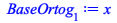 |
| 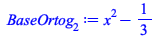 |
| 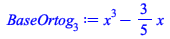 |
(12) |
Pero la gracia del método de Gram-Schmidt es que es algorítmico y se puede programar. Por lo tanto es más inteligente hacer
| > |
BaseOrtog[0]:= BaseOblic[0];
for u from 1 to KK do
BaseOrtog[u] := BaseOblic[u] -add( (simplify(int(BaseOrtog[v-1]*BaseOblic[u],x=-1..1)/int(BaseOrtog[v-1]^2,x=-1..1) ))*BaseOrtog[v-1], v=1..u)
end do;
|
| 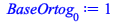 |
![Typesetting:-mprintslash([BaseOrtog[1] := x], [x])](images/BasesFuncionales_37.gif) |
|
![Typesetting:-mprintslash([BaseOrtog[3] := `+`(`*`(`^`(x, 3)), `-`(`*`(`/`(3, 5), `*`(x))))], [`+`(`*`(`^`(x, 3)), `-`(`*`(`/`(3, 5), `*`(x))))])](images/BasesFuncionales_39.gif) |
| 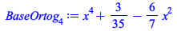 |
| 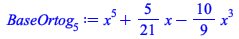 |
(13) |
Por construcción serán ortogonales. Miren
| > |
int(BaseOrtog[0]*BaseOrtog[1],x=-1..1);
int(BaseOrtog[1]*BaseOrtog[2],x=-1..1);
int(BaseOrtog[1]*BaseOrtog[3],x=-1..1); |
 |
|
 |
(14) |
Son verdaderamente ortogonales
y podemos expresar la función f como combinación lineal de esta base ortogonal | f > =  Donde, gracias a los 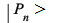son ortogonales, los coeficientes se pueden calcular facilmente y uno por uno como 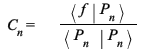`(f, P__n)), `*`(`<|>`(P__n, P__n)))" align="center" border="0">Por lo tanto las proyecciones a lo largo de cada uno de los vectores base serán
Donde, gracias a los 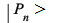son ortogonales, los coeficientes se pueden calcular facilmente y uno por uno como 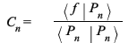`(f, P__n)), `*`(`<|>`(P__n, P__n)))" align="center" border="0">Por lo tanto las proyecciones a lo largo de cada uno de los vectores base serán
| > |
BaseOrtog[0]; C[0]:=Int(f(x)*BaseOrtog[0],x=-1..1)/Int(BaseOrtog[0]^2,x=-1..1) = int(f(x)*BaseOrtog[0],x=-1..1)/int(BaseOrtog[0]^2,x=-1..1); |
 |
| 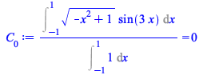 |
(15) |
| > |
BaseOrtog[1]; C[1]:=Int(f(x)*BaseOrtog[1],x=-1..1)/Int(BaseOrtog[1]^2,x=-1..1) =int(f(x)*BaseOrtog[1],x=-1..1)/int(BaseOrtog[1]^2,x=-1..1);evalf(rhs(%)); |
| > |
BaseOrtog[2]; C[2]:=Int(f(x)*BaseOrtog[2],x=-1..1)/Int(BaseOrtog[2]^2,x=-1..1)=int(f(x)*BaseOrtog[2],x=-1..1)/int(BaseOrtog[2]^2,x=-1..1); |
Otra vez la hacemos de forma algorítmica y para ello almacenamos los coeficientes en un arreglo y los calculamos
| > |
for u from 0 to KK do
C[u] := evalf(simplify( int(f(x)*BaseOrtog[u],x=-1..1)/int(BaseOrtog[u]^2,x=-1..1) ))
end do; |
| 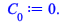 |
| 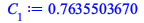 |
| 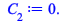 |
| 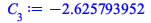 |
| 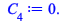 |
| 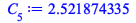 |
(18) |
y la combinación lineal será | f > = 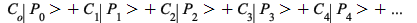
| > |
fAproxOrto1 := add(evalf(C[u])*BaseOrtog[u], u=0..KK); |
y graficamos esta aproximación con la función original
| > |
plot([f(x),fAproxTaylor[n],simplify(fAproxOrto1)],x=-1..1, legend=["f","fAproxTaylor","fAproxOrtog" ]); |
y los errores serán
En Taylor
| > |
"n"=n;"error Taylor "=evalf(ErrorTaylor); |
| > |
"n"=nn;"error Taylor "=evalf(ErrorTaylor2); |
En los polinomios de Legendre (polinomios ortogonalizados)
| > |
"n"=KK; ErrorOrto1 := evalf(sqrt(int((f(x)-simplify(fAproxOrto1))^2,x=-1..1))); |
la expansión en término de funciones ortogonales es mucho mas precisa. En particular 10 veces mas precisa.
¿La expansión en Taylor es la única expansión en una base oblicua de monomios?
Retomamos la base oblicua de monomio y hacemos la expansión de la función como combinación lineal en esa base. Es decir, no utilizamos la receta de Taylor sino que buscamos los coeficientes a partir de proyecciones y resolver un sistema de ecuaciones
| > |
fAproxObli := add(Cmono[u]*BaseOblic[u], u=0..KK); |
y proyectando con cada uno de los elementos de la base se obtiene el sistema de ecuaciones algebráicas, donde los coeficientes serán las incógnitas
| > |
for u from 0 to KK do
EcuacMono[u] := (int(f(x)*BaseOblic[u],x=-1..1,numeric)) = add(Cmono[v]*evalf(int(BaseOblic[v]*BaseOblic[u],x=-1..1,numeric)), v=0..KK);
end do; |
| 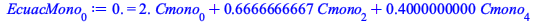 |
| 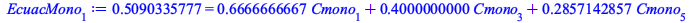 |
| 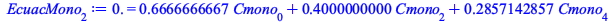 |
|
|
![Typesetting:-mprintslash([EcuacMono[5] := 0.9217724939e-1 = `+`(`*`(.2857142857, `*`(Cmono[1])), `*`(.2222222222, `*`(Cmono[3])), `*`(.1818181818, `*`(Cmono[5])))], [0.9217724939e-1 = `+`(`*`(.2857142...](images/BasesFuncionales_76.gif) |
(24) |
Construimos una lista con las ecuaciones
| > |
ListEcuacMono := {seq(EcuacMono[w], w=0..KK )}; |
| > |
ListIncogMono := {seq(Cmono[w], w=0..KK )}; |
Resolvemos el sistema ecuaciones
| > |
soluc:= fsolve(ListEcuacMono,ListIncogMono);assign(soluc); |
y la función aproximada será
y si la comparamos con la expansión en Taylor
Nótese la diferencia entre la expansión por Taylor y la expansión por monomios todas truncadas en el mismo punto.
Por su parte la aproximación por funciones ortogonales (polinomios de Legendre)
y la gráfica será
| > |
plot([f(x),fAproxTaylor[n],fAproxObli, fAproxOrto1],x=-1..1, legend=["f","fAproxTaylor","fAproxMono", "fAproxLegendre" ]); |
Calculamos entonces los errores correspondientes
Error de Taylor
 |
(31) |
Error de la aproximación de monomios
| > |
ErrorMono := evalf(sqrt(int((f(x)-fAproxObli)^2,x=-1..1))); |
Error de Legendre
Taylor resulta un fiasco y la proyección sobre los monomios casi es igual que la expansión por polinomios ortogononales. Como demostramos la aproximación en polinomios ortogonales es mejor, pero solo un poco
Base de funciones exponenciales
Igual nos hubiera pasado con otro conjunto de funciones linealmente independiente
| > |
exp0 := 1;exp1 := exp(x);exp2 := exp(2*x);exp3 := exp(3*x); exp4 := exp(4*x);exp5 := exp(5*x);exp6 := exp(6*x);
exp7 := exp(7*x);exp8 := exp(8*x);exp9 := exp(9*x); |
las cuales claramente no son ortogonales
| > |
Int(exp0*exp1,x=-1..1)=int(exp0*exp1,x=-1..1);Int(exp0*exp2,x=-1..1)=int(exp0*exp1,x=-1..1);Int(exp0*exp3,x=-1..1)=int(exp0*exp1,x=-1..1); |
| > |
Int(exp1*exp2,x=-1..1)=int(exp1*exp2,x=-1..1); Int(exp1*exp3,x=-1..1)=int(exp1*exp3,x=-1..1); |
Angulos entre las funciones exponeciales
| > |
cosangulo01 := int(exp0*exp1, x=-1..1)/(sqrt(int(exp0*exp0, x=-1..1))*sqrt(int(exp1*exp1, x=-1..1)));evalf(%); |
el ángulo entre exp0 y exp1
| > |
cosangulo02 := int(exp0*exp2, x=-1..1)/(sqrt(int(exp0*exp0, x=-1..1))*sqrt(int(exp2*exp2, x=-1..1)));evalf(%); |
el ángulo entre exp0 y exp2
| > |
cosangulo03 := int(exp0*exp3, x=-1..1)/(sqrt(int(exp0*exp0, x=-1..1))*sqrt(int(exp3*exp3, x=-1..1)));evalf(%); |
el ángulo entre exp0 y exp3
Expansión en la base oblicua de funciones exponenciales
Como las funciones exponenciales son linealmente independientes podemos plantear nos una expansión del tipo | f > = C0*1 + C1*exp(x) + C2*exp(2*x) + C3*exp(3*x) +....
Pero como la base {1, exp(x), exp(2*x), exp(3*x), ...} no es ortogonal la expansión de una función nos genera un sistema de ecuaciones para despejar los coeficientes C
Construimos entonces la base oblicua de funciones exponenciales
| > |
for k from 0 to KK do BaseOblic3[k]:= exp(k*x); end do; |
|
|
|
![Typesetting:-mprintslash([BaseOblic3[3] := exp(`+`(`*`(3, `*`(x))))], [exp(`+`(`*`(3, `*`(x))))])](images/BasesFuncionales_117.gif) |
|
|
(43) |
y la expansión en esta base de funciones oblicuas
| > |
fAproxObli3 := add(CexpOblic[u]*BaseOblic3[u], u=0..KK); |
Al igual que hicimos arriba podemos expendir nuestra función en término de esa base oblicua
| > |
for u from 0 to KK do
EcuacExpOblic[u] := (int(f(x)*BaseOblic3[u],x=-1..1,numeric)) = add(CexpOblic[v]*evalf(int(BaseOblic3[v]*BaseOblic3[u],x=-1..1,numeric)), v=0..KK);
end do; |
Una vez mas, construimos una lista con las ecuaciones
| > |
ListEcuacExpOblic := {seq(EcuacExpOblic[w], w=0..KK )}; |
| > |
ListIncogExpOblic := {seq(CexpOblic[w], w=0..KK )}; |
| > |
solucExpOblic:= fsolve(ListEcuacExpOblic,ListIncogExpOblic);assign(solucExpOblic); |
finalmente la expansión en la base oblicua de funciones exponenciales será
Bases Exponenciales ortogonales
Igual las podemos ortogonalizar, y para empezar almacenamos las funciones de la base oblicuas en un arreglo y ortogonalizamos con Gram-Schmidt
| > |
BaseOrtog3[0]:= BaseOblic3[0];
for u from 1 to KK do
BaseOrtog3[u] := (BaseOblic3[u] -add( (simplify(int(BaseOrtog3[v-1]*BaseOblic3[u],x=-1..1)/int(BaseOrtog3[v-1]^2,x=-1..1) ))*BaseOrtog3[v-1], v=1..u))
end do; |
| > |
int(BaseOrtog3[2]*BaseOrtog3[3],x=-1..1);
int(BaseOrtog3[1]*BaseOrtog3[3],x=-1..1);
int(BaseOrtog3[4]*BaseOrtog3[3],x=-1..1); |
y los nuevos coeficientes serán
| > |
for u from 0 to KK do
CexpOrt[u] := (simplify( int(f(x)*BaseOrtog3[u],x=-1..1,numeric)/int(BaseOrtog3[u]^2,x=-1..1,numeric) ))
end do; |
y la combinación lineal
| > |
fAproxOrto3 := add(CexpOrt[u]*BaseOrtog3[u], u=0..KK); |
y la gráfica será
| > |
plot([f(x),fAproxTaylor[n],fAproxOrto1,fAproxObli3, fAproxOrto3],x=-1..1, legend=["f","fAproxTaylor","fAproxLegendre","fAproxExpObli","fAproxExpOrto" ]); |
y los errores
El de Taylor
El de Legendre
 |
(55) |
El error de la base de funciones exponenciales oblicuas
| > |
ErrorOrto3 := (sqrt(int((f(x)-fAproxObli3)^2,x=-1..1,numeric))); |
El error de la base de funciones expoenenciales ortogonales
| > |
ErrorOrto3 := (sqrt(int((f(x)-fAproxOrto3)^2,x=-1..1,numeric))); |
Es claro que la expansión en una base de funciones ortogonales, no necesariamente es más precisa. Cuando comparamos polimomios, claramente si lo es.
Polinomios ortogonales predefinidos
En MAPLE los polinomios ortogonales están predefinidos (en una biblioteca orthopoly) y se denotan como P(n,x) donde n es el orden del polinomo y x la variable. Para detalles pueden consultar la hoja de ayuda
| > |
P(0,x);P(1,x);P(2,x);P(3,x);P(4,x);P(5,x); |
Los Polinomios de Legendre son ortogonales bajo un producto interno definido por < Pn | Pm > = ∫1-1 Pn Pm dx
| > |
int(P(z,x)*P(m,x),x=-1..1); |
| > |
int(P(14,x)*P(28,x),x=-1..1); |
 |
(61) |
| > |
int(P(77,x)*P(77,x),x=-1..1); |
Por lo tanto los coeficientes de la expansión serán < f | Pm > = ∫1-1 f(x) Pm(x) dx
m=0
| > |
Int(f(x)*P(0,x),x=-1..1)/Int(P(0,x)*P(0,x),x=-1..1)=int(f(x)*P(0,x),x=-1..1)/int(P(0,x)*P(0,x),x=-1..1); |
m=1
| > |
Int(f(x)*P(1,x),x=-1..1)/Int(P(1,x)*P(1,x),x=-1..1)=int(f(x)*P(1,x),x=-1..1)/int(P(1,x)*P(1,x),x=-1..1); |
m=2
| > |
Int(f(x)*P(2,x),x=-1..1)/Int(P(2,x)*P(2,x),x=-1..1)=int(f(x)*P(2,x),x=-1..1)/int(P(2,x)*P(2,x),x=-1..1); |
m=3
| > |
Int(f(x)*P(3,x),x=-1..1)/Int(P(3,x)*P(3,x),x=-1..1)=int(f(x)*P(3,x),x=-1..1)/int(P(3,x)*P(3,x),x=-1..1); |
m=4
| > |
Int(f(x)*P(4,x),x=-1..1)/Int(P(4,x)*P(4,x),x=-1..1)=int(f(x)*P(4,x),x=-1..1)/int(P(4,x)*P(4,x),x=-1..1); |
en general los coeficientes de la expansión se expresan
| > |
CoefLegendre[z]:= int(f(x)*P(z,x),x=-1..1)/int(P(z,x)*P(z,x),x=-1..1); |
y la aproximación de la función
| > |
f(x)=Sum(CoefLegendre[z]*P(z,x),z=0..nn); |
| > |
f(x)=Sum(CoefLegendre[z]*P(z,x),z=0..h); |
| > |
AproxLegendre[h]:= sum(CoefLegendre[z]*P(z,x),z=0..h); |
| > |
simplify(AproxLegendre[h]); |
| > |
plot([f(x),AproxLegendre[h]],x=-1..1, legend=["f","AproxLegendre" ]); |
Otra vez, el error de la aproximación será la norma de la distancia entre los dos vectores. Esto es
| > |
ErrorLegendre := sqrt(int((f(x)-AproxLegendre[h])^2,x=-1..1)); |
es decir
Otro conjunto de polinomios ortogonales son los polinomios de Tchevichev
| > |
T(0,x);T(1,x);T(2,x);T(3,x);T(4,x);T(5,x); |
 |
 |
|
|
|
|
(78) |
Que se parecen a los de Legendre, pero no son
| > |
P(0,x);P(1,x);P(2,x);P(3,x);P(4,x);P(5,x); |
|
 |
|
|
|
|
(79) |
Porque el producto interno con el cual ortogonalizamos la base de monomios  es distinto
es distinto
| > |
pesoChevichev := 1/sqrt(1-x^2);
CoefChevi[m]:= int(f(x)*T(m,x)*pesoChevichev,x=-1..1)/int(T(m,x)*T(m,x)*pesoChevichev,x=-1..1); |
| > |
AproxChevi[h]:= sum(CoefChevi[m]*T(m,x),m=0..h); |
| > |
Taylor[h+2]:= taylor(f(x),x=0,h+2); AproxTaylor[h+2]:=convert(Taylor[h+2],polynom); |
![Typesetting:-mprintslash([Taylor[7] := series(`+`(`*`(3, `*`(x)), `-`(`*`(6, `*`(`^`(x, 3)))), `*`(`/`(39, 10), `*`(`^`(x, 5))))+O(`^`(x, 7)),x,7)], [series(`+`(`*`(3, `*`(x)), `-`(`*`(6, `*`(`^`(x, 3...](images/BasesFuncionales_246.gif) |
|
(82) |
| > |
plot([f(x),AproxTaylor[h+2],AproxLegendre[h],AproxChevi[h]],x=-1..1); |
| > |
ErrorChevi := sqrt(int((f(x)-AproxChevi[h])^2*pesoChevichev,x=-1..1)); |
Si seleccionamos una función un poco mas compleja
| > |
restart: with(plots): with(orthopoly); |
![[G, H, L, P, T, U]](images/BasesFuncionales_253.gif) |
(85) |
| > |
f := x -> sqrt(x^4+x^2+1)*sin(3*Pi*x);plot(f(x), x=-1..1); |
Probamos con Taylor
| > |
Taylor[n]:= taylor(f(x),x=0,n); |
| > |
AproxTaylor[n]:=convert(Taylor[n],polynom); |
| > |
plot([f(x),AproxTaylor[n]],x=-1..1,y=-2..2); |
y con Legendre
| > |
CoefLegendre[k]:= int(f(x)*P(k,x),x=-1..1)/int(P(k,x)*P(k,x),x=-1..1); |
| > |
AproxLegendre[n]:= sum(CoefLegendre[k]*P(k,x),k=0..n); |
| > |
AproxLegendreDefitiva:=evalf(%); |
| > |
plot([f(x),AproxTaylor[n],AproxLegendreDefitiva],x=-1..1,y=-2..2,legend=["func","AproxTaylor","AproxLegendre"]); |
Los errores
| > |
ErrorTaylor := sqrt(int((f(x)-AproxTaylor[n])^2,x=-1..1)); |
| > |
ErrorLegendre := sqrt(int((f(x)-AproxLegendreDefitiva)^2,x=-1..1)); |
![Typesetting:-mprintslash([BaseOrtog3[4] := `+`(exp(`+`(`*`(4, `*`(x)))), `*`(`/`(1, 8), `*`(exp(-4))), `-`(`*`(`/`(1, 8), `*`(exp(4)))), `-`(`*`(`/`(1, 40), `*`(exp(-3), `*`(`+`(`*`(3, `*`(exp(8))), `...](images/BasesFuncionales_151.gif)
![Typesetting:-mprintslash([BaseOrtog3[4] := `+`(exp(`+`(`*`(4, `*`(x)))), `*`(`/`(1, 8), `*`(exp(-4))), `-`(`*`(`/`(1, 8), `*`(exp(4)))), `-`(`*`(`/`(1, 40), `*`(exp(-3), `*`(`+`(`*`(3, `*`(exp(8))), `...](images/BasesFuncionales_153.gif)
![Typesetting:-mprintslash([BaseOrtog3[4] := `+`(exp(`+`(`*`(4, `*`(x)))), `*`(`/`(1, 8), `*`(exp(-4))), `-`(`*`(`/`(1, 8), `*`(exp(4)))), `-`(`*`(`/`(1, 40), `*`(exp(-3), `*`(`+`(`*`(3, `*`(exp(8))), `...](images/BasesFuncionales_154.gif)
![Typesetting:-mprintslash([BaseOrtog3[5] := `+`(exp(`+`(`*`(5, `*`(x)))), `*`(`/`(1, 10), `*`(exp(-5))), `-`(`*`(`/`(1, 10), `*`(exp(5)))), `-`(`*`(`/`(1, 30), `*`(exp(-4), `*`(`+`(`*`(2, `*`(exp(10)))...](images/BasesFuncionales_163.gif)
![Typesetting:-mprintslash([BaseOrtog3[5] := `+`(exp(`+`(`*`(5, `*`(x)))), `*`(`/`(1, 10), `*`(exp(-5))), `-`(`*`(`/`(1, 10), `*`(exp(5)))), `-`(`*`(`/`(1, 30), `*`(exp(-4), `*`(`+`(`*`(2, `*`(exp(10)))...](images/BasesFuncionales_164.gif)